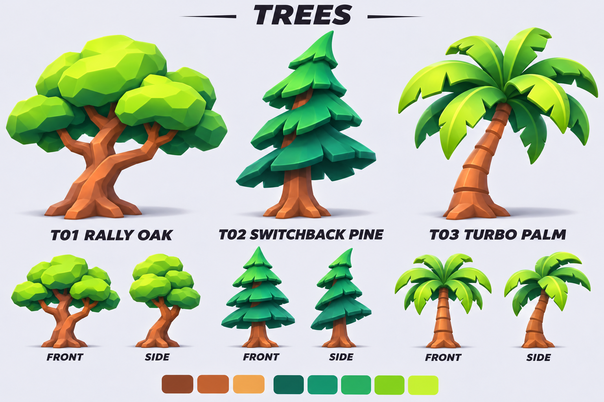
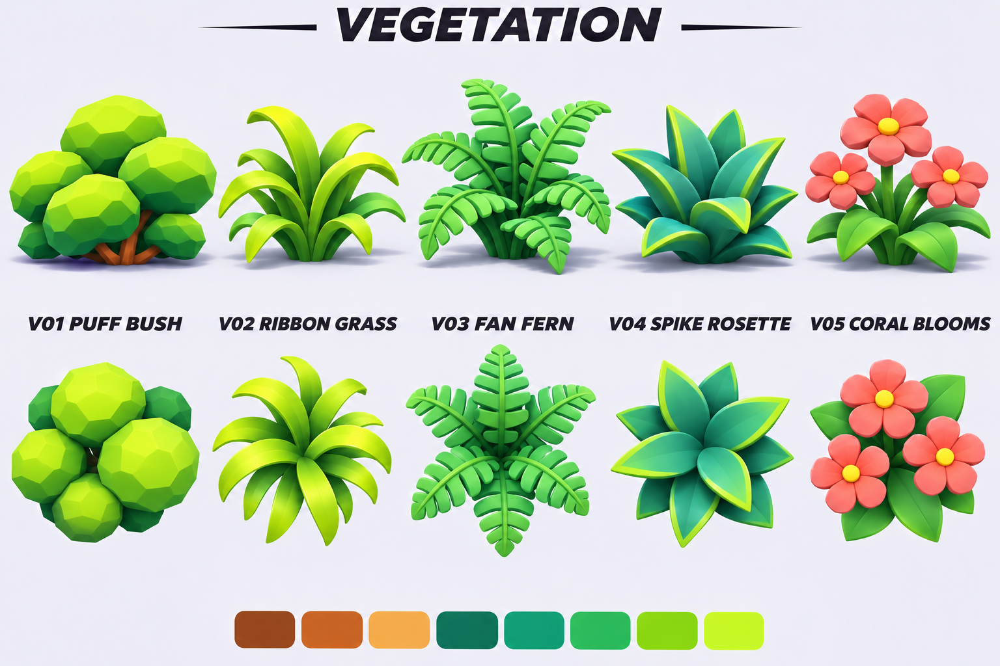
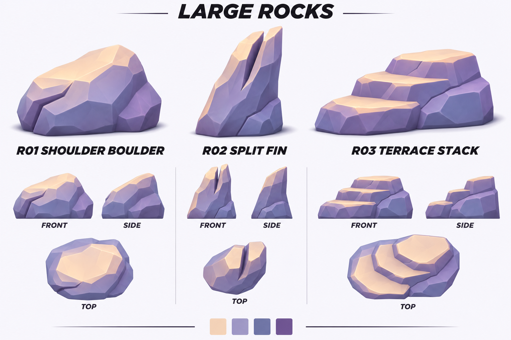
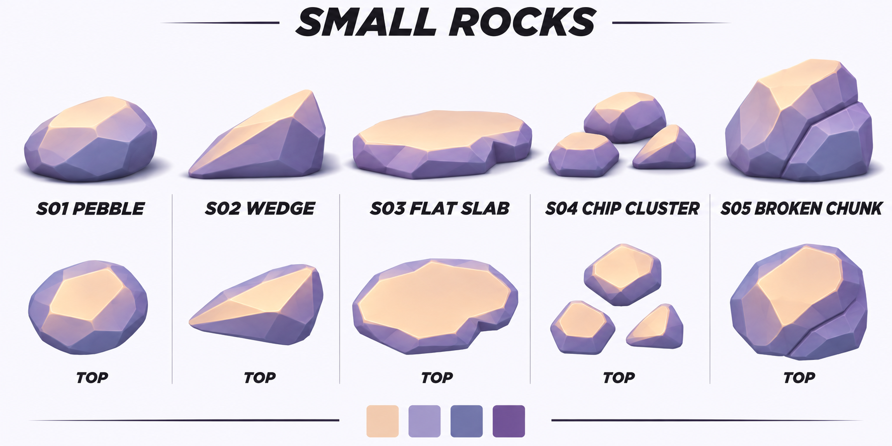

A colorful world
for the starting grid.
Sixteen natural props designed to complement the original buggy lineup: bold silhouettes, chunky foliage, warm trunks and softly faceted stone.


Rally Oak
A broad umbrella canopy over a stout, gently leaning trunk.
4.8 × 4.5 × 5.5 m W × D × H
Modeling brief ↗Turbo Palm
A curved segmented trunk and a broad radial crown.
4.5 × 4.2 × 6 m W × D × H
Modeling brief ↗VEGETATION
Download reference image

Puff Bush
Low asymmetric mound with rounded foliage lobes.
1.8 × 1.5 × 1.3 m W × D × H
Modeling brief ↗Coral Blooms
Three bold coral flowers above short green foliage.
0.8 × 0.65 × 0.55 m W × D × H
Modeling brief ↗LARGE ROCKS
Download reference image

Shoulder Boulder
Squat, broad asymmetric boulder with a sloping top.
3.2 × 2.6 × 2.4 m W × D × H
Modeling brief ↗Split Fin
Tall narrow wedge with a forked upper silhouette.
2.3 × 1.5 × 4.2 m W × D × H
Modeling brief ↗SMALL ROCKS
Download reference image

Wedge
Triangular stone with a single dominant ridge.
0.55 × 0.35 × 0.32 m W × D × H
Modeling brief ↗Chip Cluster
Three separate small stones in a loose triangular cluster.
0.75 × 0.65 × 0.22 m W × D × H
Modeling brief ↗Broken Chunk
Upright irregular rock with a broad fracture face.
0.65 × 0.5 × 0.5 m W × D × H
Modeling brief ↗